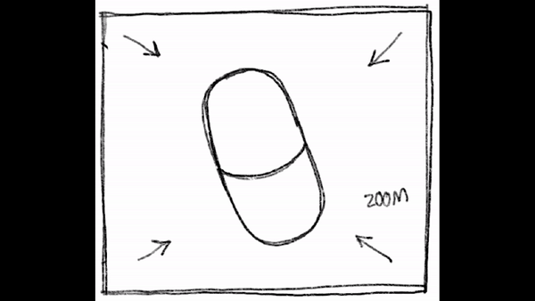
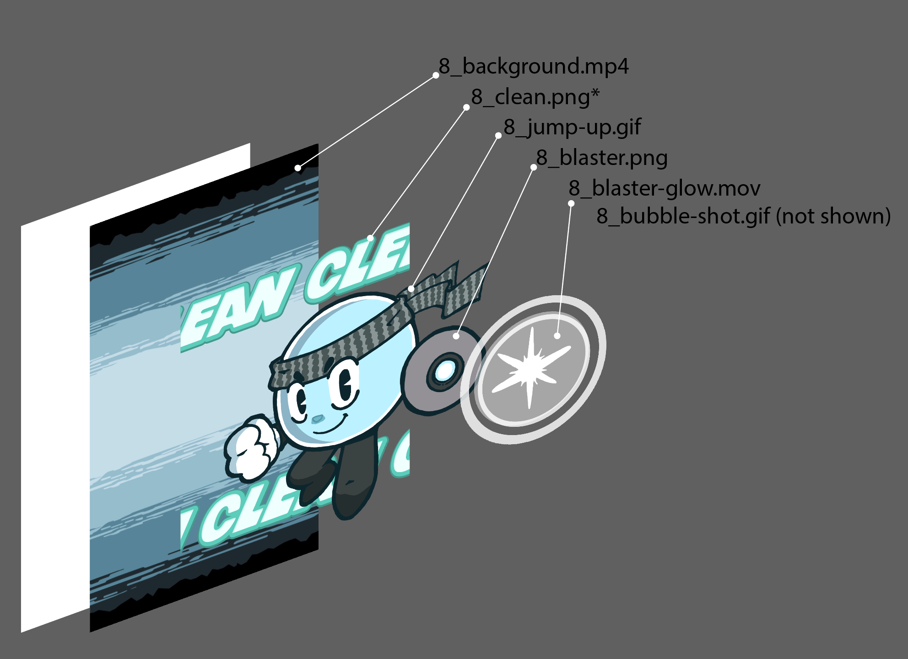
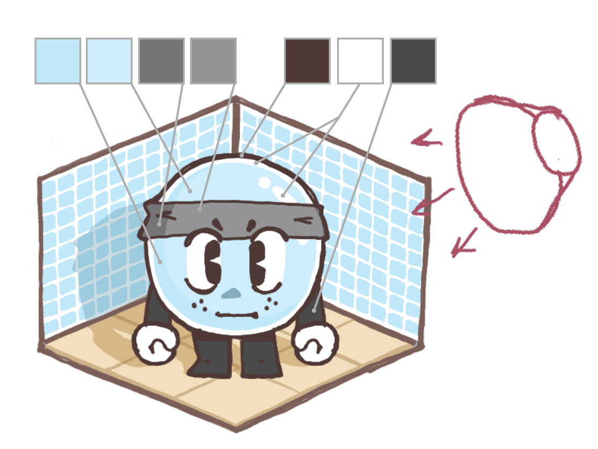

GOSHI SHORT-FORM MOTION BUMP (2024)
Motion Graphics
1324

Overview
30 second Bumper for Japanese/American self-care company, Goshi. I was responsible for storyboarding, composition, and post-production of this project. All assets done by frequent collaborator, Ricky Pacas, who I started Studio2Tek with.
I also was responsible for the original score. Composed in FL Studio, Mix and Mastered by Me. Despite all the elements and work that went into this (3 month Project) I would still take up a project like this in a heartbeat.
As of right now this advertisment has generated nearly 1,000 likes within its first month, and is climbing everyday.

Original storyboard
This project was able to give me the freedom to waltz through all of the mediums I have touched on previously. Weaving my music production, storyboarding, and graphic design skills into a nice and tidy product. Working with a client this big was really exciting for me, and tought me a lot about staying in contact with who your working for.
Setting up meetings, keeping the team on track, and creating presentations so the team and the client are always on the same page.

Layer Breakdown for Scene 8

Color Testing
Overview
30 second Bumper for Japanese/American self-care company, Goshi. I was responsible for storyboarding, composition, and post-production of this project. All assets done by frequent collaborator, Ricky Pacas, who I started Studio2Tek with.
I also was responsible for the original score. Composed in FL Studio, Mix and Mastered by Me. Despite all the elements and work that went into this (3 month Project) I would still take up a project like this in a heartbeat.
As of right now this advertisment has generated nearly 1,000 likes within its first month, and is climbing everyday.
This project was able to give me the freedom to waltz through all of the mediums I have touched on previously. Weaving my music production, storyboarding, and graphic design skills into a nice and tidy product. Working with a client this big was really exciting for me, and tought me a lot about staying in contact with who your working for.
Setting up meetings, keeping the team on track, and creating presentations so the team and the client are always on the same page.